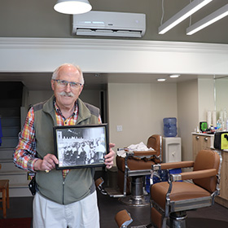
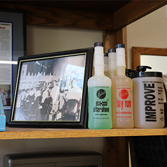
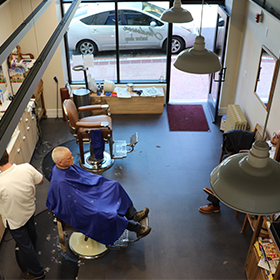

A look inside the past of the Anderson Hotel, one of the oldest hotels in San Luis Obispo.
On a warm July evening over a century ago, more than 300 guests arrived at a brand new building on the corner of Marsh and Monterey in San Luis Obispo. Musicians were brought in like Miss Olive Reed of San Francisco and Jack Dughl’s orchestra. A dinner had been prepared. A street which was once described as a “colony of small shacks,” by the The San Luis Obispo Daily Telegram announced itself on this July evening with an opulent grand opening celebration.
The Anderson Hotel had finally arrived.
A year and three days after ground had been broken on the corner of Monterey and Morro streets, J.L Anderson opened the doors of his 5 story hotel, with 95 rooms, to the public.
With the erection of the J.L. Anderson hotel on the opposite corner, work on which is to start on the first of the month, Monterey street will take a long step forward in the city's rapid development,” the San Luis Obispo Daily Telegram printed on June first 1922.
Equipped with an elegant lobby, ladies dressing rooms, a glossy dance floor, the hotel marked a new era in the burgeoning city of San Luis Obispo.
The San Luis Obispo Daily Telegram had been tracking the hotel’s progress for over a year, signaling the community's interest in the new build. They reported on architects finalizing plans from San Francisco, furniture being ordered from Defosset furniture Co, and businesses around town that announced they’d be moving in. Early estimates expected the hotel to cost around $200,000 to build, the equivalent almost $4 Million today.
The spirit of optimism... of the improbability of stopping a great growth in San Luis Obispo," the Telegram wrote in February 1923, "is reaching sweeping proportions."
By the 1960s, the Anderson Hotel’s spirit of optimism began to reach a halt.
Ray Shearer, who has worked at the Anderson Barber shop on the street level of the hotel since 1968, said as motels began to gain more popularity, The Anderson saw the repercussions.
“People want to be able to park the car,” Shearer said. “The only parking we [The Anderson Hotel] had was Court Street.”
After J.L. Anderson sold the hotel sometime in the 50s, it passed through multiple hands until being converted into apartments for older adults with limited income, according to Shearer.
In 2023, the Housing Authority of SLO, or HASLO, acquired the building and began renovations to ensure the building's safety, cementing the organization's commitment to continue providing housing to San Luis Obispo’s vulnerable community, according to the HASLO website.
The building's extensive renovations took 3 years to complete, during which businesses like Anderson Barbershop had to find a new location to operate out of, according to Shearer.
Three years later, Shearer is back in the location he has worked at for half a century, and owned since 1978.
To Shearer, returning to the Anderson Hotel location feels like “coming home.”
Accompanied by new businesses on the block like Anderson Social, a European inspired bistro, the Anderson Hotel is forging a new path, one that echoes the sense of optimism once felt on a July evening over a century ago.
Click on an article to read the original The San Luis Obispo Daily Telegram coverage of the Anderson Hotel.
June 25, 1923
June 30, 1923
October 3, 1970
It's been over 40 years since the Anderson has operated as a hotel. Much has changed — but the buisnesses running on the ground floor are reminiscent of a different era, and aim to keep the Anderson's orginial spirit alive.
Nobody knows the Anderson Hotel better than Ray Shearer. A barber since the 60s and the owner of the barbershop since the 70s, hear him speak about his journey to cutting hair and the history of his buisness.

Ray Shearer's Journey

The Barbershop's Past

History of the Mezzanine
Click an image to play | Double-click to pause
Ray Shearer has worked at the Anderson Hotel since it was converted into apartments in the 70s. Take a tour of what the apartments now look like, after an extensive 2023 renovation.
Video caption here
From 1923 to 2026, the Anderson has went through many differnt iterations. Read on to see a timeline of a century of change.